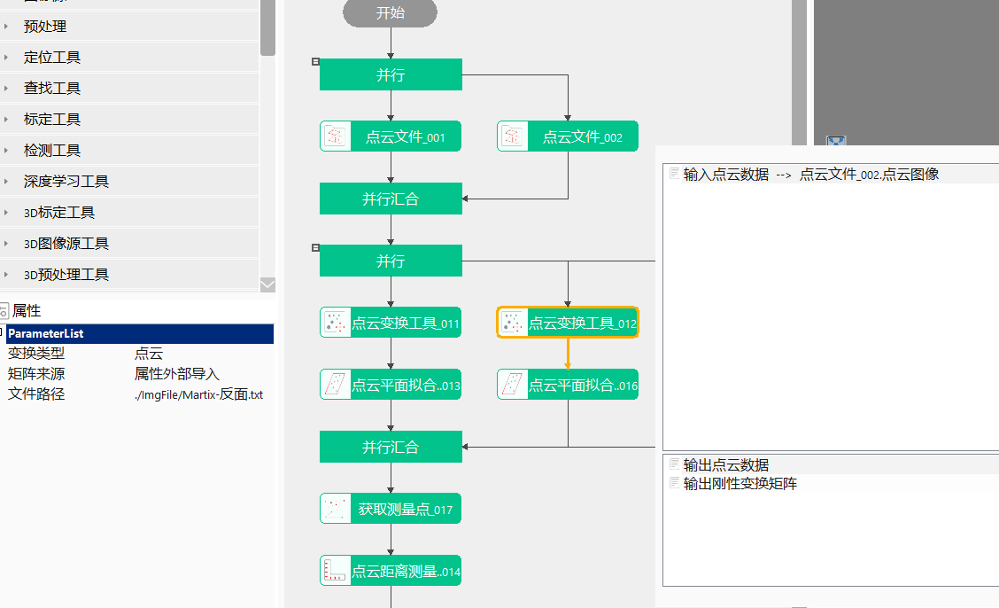

Công cụ biến đổi đám mây điểm thực hiện biến đổi không gian đối với dữ liệu đám mây điểm, khối hộp chữ nhật, hệ tọa độ, tập điểm 3D, vector đầu vào dựa trên ma trận biến đổi cứng được nhập từ bên trong hoặc bên ngoài, từ đó hoàn thành phép đo kích thước ở giai đoạn sau.

Trong đo lường 3D, biến đổi đám mây điểm được ứng dụng khá rộng rãi, chẳng hạn trong các dự án kiểm tra khung giữa điện thoại, đo độ dày, đo chiều cao, v.v.
step1：Thêm file đám mây điểm, công cụ biến đổi đám mây điểm, đồng thời nhấp đúp để mở chuỗi tham số của công cụ, liên kết file đám mây điểm, như Hình 3-1 minh họa；
step2：Chọn phương thức khác nhau để lấy ma trận biến đổi theo nguồn ma trận, ví dụ nhấp vào thuộc tính công cụ “Đường dẫn file”, nhập ma trận biến đổi đám mây điểm, sau đó nhấp chạy công cụ này；

Không có
| Tên tham số | Mô tả tham số |
|---|---|
| Dữ liệu đám mây điểm đầu vào | Nhập ảnh đám mây điểm cần biến đổi |
| Khối hộp chữ nhật đầu vào | Nhập khối hộp chữ nhật cần biến đổi |
| Hệ tọa độ đầu vào | Nhập hệ tọa độ cần biến đổi |
| Tập điểm 3D đầu vào | Nhập tập điểm 3D cần biến đổi |
| Vector đầu vào 1 | Nhập vector thứ nhất |
| Vector đầu vào 2 | Nhập vector thứ hai |
| Ma trận biến đổi cứng | Ma trận biến đổi do công cụ khác xuất ra：ma trận 3×4 |
| Tên tham số | Mô tả tham số |
|---|---|
| Loại biến đổi | Hỗ trợ đám mây điểm, khối hộp chữ nhật, hệ tọa độ, tập điểm 3D, vector |
| Nguồn ma trận | Bao gồm ba loại：liên kết dữ liệu, nhập từ bên ngoài qua thuộc tính và thiết lập trong giao diện nâng cao |
| Đường dẫn file | Chỉ đường dẫn file ma trận biến đổi đám mây điểm |
| Bật tính toán song song | Có bật tính toán song song hay không, khi chọn Có, thuật toán sẽ bật phương thức tính toán song song OpenMp, có thể tăng tốc độ tính toán, nhưng có thể xuất hiện tình trạng thời gian xử lý không ổn định, khi chọn Không, thuật toán sẽ tắt tính toán song song OpenMp. |
| Tỷ lệ phần trăm số luồng | Thiết lập tỷ lệ phần trăm số luồng của tính toán song song, phạm vi hợp lệ là (0, 0.75], tương ứng biểu thị phạm vi phần trăm (0%, 75%]. |
Giao diện nâng cao có thể dùng để thiết lập ma trận như sau：
| Tên | Mô tả tham số |
|---|---|
| Ma trận | Nhập ma trận biến đổi trong giao diện nâng cao |
| Tên tham số | Mô tả tham số |
|---|---|
| Dữ liệu đám mây điểm đầu ra | Xuất dữ liệu đám mây điểm sau biến đổi |
| Khối hộp chữ nhật đầu ra | Xuất khối hộp chữ nhật sau biến đổi |
| Hệ tọa độ đầu ra | Xuất hệ tọa độ sau biến đổi |
| Tập điểm 3D đầu ra | Xuất tập điểm 3D sau biến đổi |
| Ma trận biến đổi cứng đầu ra | Xuất ma trận biến đổi cứng |
| Tên tham số | Mô tả tham số |
|---|---|
| Dữ liệu đám mây điểm đầu ra | Xuất dữ liệu đám mây điểm sau biến đổi |
| Khối hộp chữ nhật đầu ra | Xuất khối hộp chữ nhật sau biến đổi |
| Hệ tọa độ đầu ra | Xuất hệ tọa độ sau biến đổi |
| Tập điểm 3D đầu ra | Xuất tập điểm 3D sau biến đổi |
| Ma trận biến đổi cứng đầu ra | Xuất ma trận biến đổi cứng |
| Thời gian thực thi | Thời gian thực thi công cụ |
| Kết quả thực thi | Kết quả thực thi công cụ |
Tham khảo “\Samples\3D\点云\点云变换.gvp”.
Không có